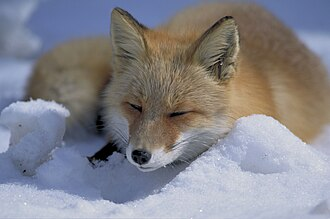

Foxes (commonly known as "huli" in Chinese) belong to the order Carnivora and family Canidae in animal taxonomy. Among them, silver foxes, a subspecies of the red fox (Vulpes vulpes), are the most commonly domesticated species.
Foxes are known for their high reproductive rates, strong disease resistance, and omnivorous diet, making them easy to domesticate. They have long fur, pointed ears, relatively short legs, and a slender snout, resembling a medium-sized dog with a bushy tail.
In the strictest sense, the term "fox" refers to the 10 species in the genus Vulpes (true foxes), particularly the red fox of the Old World and the American red fox of the New World.
Compared to wolves and dholes, foxes are generally smaller in size, with a flatter skull. Their tails have a distinct color difference between the tip and the rest of the tail, which is one of their distinguishing features.Fox fur typically comes in shades of orange, brown, gray, and white. Additionally, foxes are highly loyal to their mates—even if their partner dies, they do not seek another mate, demonstrating strong monogamous behavior.
← Back